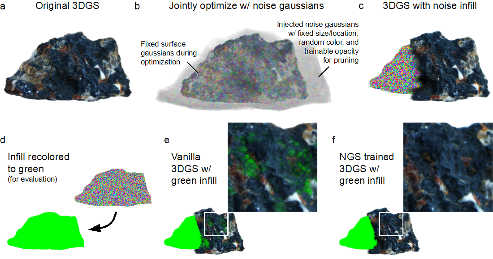

Methodology: Noise Guided Splatting (NGS)
Overview of NGS (Noise Guided Splatting). (a) Object-centric 3DGS render of a stone. (b) Noise Gaussians are introduced into the object's volume during the training process. These noise Gaussians have fixed size/location, random color, and trainable opacity for pruning. Surface Gaussians are fixed during this noise optimization phase. (c) Visible noise Gaussians that appear in front of surface Gaussians are removed during optimization, leaving subsurface noise filling the object. (d) This noise infill can be recolored (e.g., to green) and saved for evaluating transparency in any splatting-based method. (e) When the recolored infill is inserted into a vanilla 3DGS model, highly transparent regions on the surface become evident as the green infill "leaks" through. (f) In contrast, the recolored infill does not leak through the surface of an NGS-trained model, demonstrating its improved opacity.
NGS addresses the false transparency by strategically placing these noise Gaussians within the object volume. This obstructs direct lines of sight between front and back surfaces, forcing the optimization to prioritize foreground surface reconstruction and achieve higher opacity. The method is designed as a plug-and-play add-on, requiring minimal modifications to existing 3DGS frameworks, primarily the introduction of noise Gaussians and an alpha consistency loss ($\mathcal{L}_a$). The noise initialization involves computing a convex hull from existing Gaussian primitives to approximate the object's volume, converting it to a coarse occupancy grid, and then populating it with multi-scale noise Gaussians.